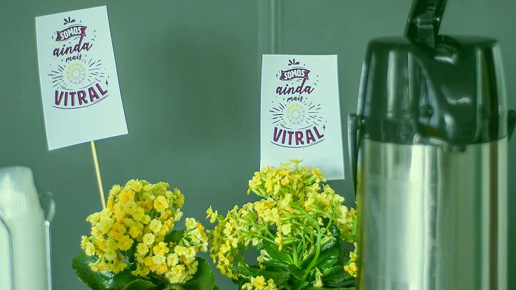

na comunidade
Servir na comunidade é trabalhar nas áreas que envolvem o dia a dia da igreja, como música, recepção, comunicação, gestão, ensino, crianças, etc.
Trabalhar de forma voluntária é uma das formas de se envolver com a Vitral. Um dos valores da comunidade é o serviço, que exige tempo e energia de quem está disposto a colaborar. Isso significa que, quando uma pessoa se dispõe a doar-se por algum projeto interno ou externo, a comunidade conta com o seu melhor. Por isso, prezamos pela excelência em todas as áreas.
Servir na comunidade é trabalhar nas áreas que envolvem o dia a dia da igreja, como música, recepção, comunicação, gestão, ensino, crianças, etc.
Servir a partir da comunidade é se envolver em projetos que a Vitral realiza e/ou apoia, sempre de acordo com a orientação da igreja.
Servir além da comunidade é trabalhar em projetos que não estão ligados à comunidade. A Vitral desafia seus membros e frequentadores a se envolverem com a sociedade também dessa forma.
Gostou de alguma das formas? Fale com a equipe de recepção no início ou final dos encontros.

Grupos de Trabalho não são um fim em si mesmo: eles surgem, se mantêm e são encerrados, conforme nossas necessidades. Grupos de trabalho existem pelo envolvimento de pessoas. Embora possamos trabalhar em qualquer área, cada um de nós tem um perfil pessoal em que podemos fazer melhor o que fazemos. É o que muitos resumem como "pessoas certas, nos lugares certos, pelos motivos certos".
Se você tem interesse em entrar para algum grupo de trabalho nas áreas acima, converse com a equipe de recepção no início ou final dos encontros.